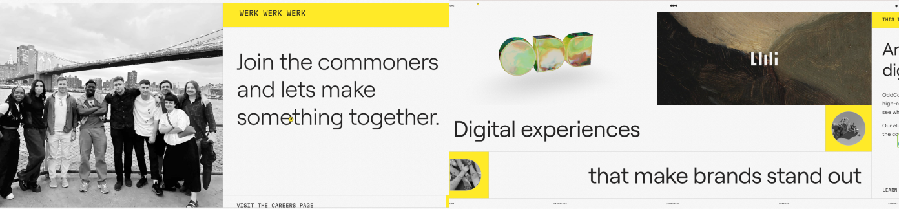

La página oddcommon.com es el sitio web de OddCommon, una agencia independiente de diseño y tecnología con sede en Brooklyn, Nueva York. Se especializa en la expresión de marcas y productos a través de experiencias digitales de alta calidad. Este sitio, desarrollado por Alex Krawitz, cofundador y CEO de la empresa, recibió el premio a la Mejor Navegación y Estructura en los Webby Awards , destacando por su diseño innovador y por ofrecer una experiencia de usuario excepcional.

Al analizar el SEO de la web de OddCommon, he
encontrado una propuesta muy potente visualmente, pero con varios
aspectos técnicos que se podrían mejorar para que aparezca mejor
posicionada en buscadores.
Lo primero que analicé fue cómo están organizados los títulos. Me
llamó la atención que no aparece ningún <h1>,
que normalmente es el encabezado principal y ayuda a que los
buscadores entiendan mejor de qué trata la web. El texto que más se
parece a un título principal está dentro de un
<h2> con la clase
.heading:
<h2 class="heading">Digital experiences that make brands
stand out</h2>
Justo debajo hay un <h3> con el texto:
<h3>An independent digital agency</h3>
Ambos títulos son relevantes y contienen palabras clave, pero al no
haber un <h1>, puede que los buscadores no
tengan claro cuál es el contenido principal.
En cuanto a la descripción de la web que aparece en el código, es
esta:
<meta name="description" content="OddCommon is an independent
design and technology agency.">
Aunque está bien escrita, es demasiado corta y algo genérica. Se
podría mejorar añadiendo información más concreta sobre lo que ofrece
la agencia, por ejemplo:
"OddCommon es una agencia independiente especializada en diseño y
tecnología digital, creando experiencias interactivas para marcas
innovadoras."
Esto ayudaría a que tanto los buscadores como los usuarios entiendan
mejor a qué se dedica.
Respecto a las palabras clave, no se usa la etiqueta
<meta name="keywords"> (aunque hoy en día ya no
es tan importante), pero sí aparecen en el contenido términos como:
digital experiences,
independent agency, design,
technology o brands. Están bien
elegidas, aunque podrían reforzarse usándolas más veces en secciones
clave o combinándolas con otras como “creative digital agency” o
“interactive experiences”.
Por otro lado, algunas imágenes no tienen el atributo
alt, lo cual es importante tanto para el SEO como
para la accesibilidad. Lo ideal sería incluir una breve descripción,
por ejemplo:
<img src="oddcommon-ikea-project.jpg" alt="Proyecto IKEA para
branding digital" />
Además, hay partes del texto que están divididas palabra por palabra
en <div>s individuales con clases como
.words, como por ejemplo:
<div class="words">Digital</div>
<div class="words">experiences</div>
Este tipo de estructura tiene sentido a nivel visual (para
animaciones, por ejemplo), pero puede dificultar que los buscadores
entiendan bien el contenido si no está acompañado de una estructura
más clara en el resto del código.
Por último, las URLs que se utilizan sí son limpias y fáciles de leer,
como:
https://oddcommon.com/work/
La estética de la web destaca desde el primer vistazo por su estilo claramente experimental y visualmente impactante. La paleta cromática se basa en tonos amarillo, gris y blanco, que aportan un contraste vibrante y moderno. El fondo blanco potencia la visibilidad de los elementos interactivos en amarillo, generando una identidad clara y reconocible.
El diseño juega constantemente con los tamaños tipográficos, alternando entre fuentes muy grandes, medianas y pequeñas para generar ritmo visual. La tipografía principal es Roobert, que se emplea en distintos pesos (400, 500, 700) y tamaños (desde 16px hasta más de 80px), lo que establece una jerarquía visual muy marcada. Además, se complementa con una familia de sistema como system-ui o Segoe UI, que garantiza legibilidad y compatibilidad en distintos dispositivos.
A nivel de estructura, la disposición es muy limpia y bien alineada, con márgenes y espaciados cuidados. Se aprecia una coherencia total en el uso de elementos gráficos y de diseño. Además, la web no se limita a mostrar contenido estático: emplea numerosas animaciones, GIFs, imágenes en blanco y negro y elementos 3D que aportan dinamismo y modernidad.
La interactividad es uno de los pilares del sitio. Elementos como el logo en 3D que reacciona al puntero, las fotografías de los integrantes de la agencia que cambian de iluminación al pasar el cursor, o la aparición de formas 3D con sus rostros al interactuar con sus nombres, son ejemplos claros de cómo se busca generar una experiencia inmersiva. Incluso pequeños detalles como el tachado de palabras en lugar del clásico subrayado aportan originalidad.
Todos estos elementos están puestos al servicio del contenido, reforzando la personalidad de la agencia. La web está perfectamente adaptada a diferentes tamaños de pantalla, respondiendo con fluidez en móvil, tablet y escritorio. Si bien algunos elementos pueden tardar ligeramente en cargar por su peso visual, esto no compromete la experiencia global.
En términos de seguridad, la web cuenta con HTTPS, lo cual garantiza una conexión cifrada y segura para el usuario. No se detectan funcionalidades de compra ni formularios que impliquen la introducción de datos personales, por lo que el nivel de riesgo es mínimo. Además, no hay rastros de cookies ni se muestra ningún banner relacionado con ellas, lo que refuerza la idea de que la web no recopila información sensible. Aun así, sería recomendable incluir una política de privacidad o un pequeño aviso legal que informe sobre este aspecto, aunque sea de forma básica, para mayor transparencia.